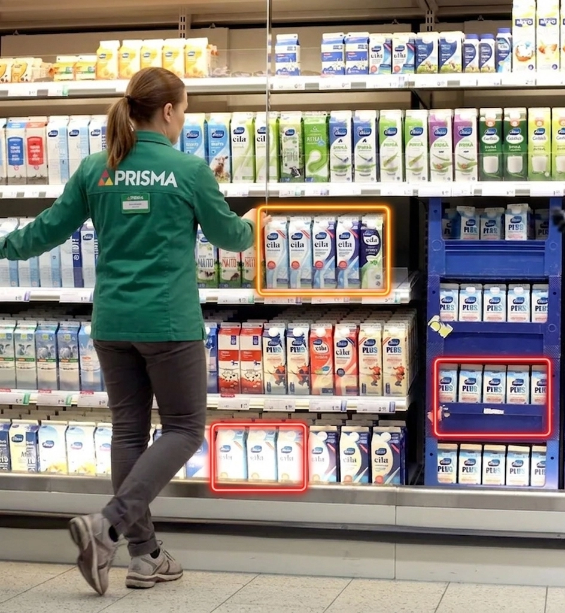

What I explored
How near-expiry products could become easier to find, handle, and choose through a connected employee tool, branded in-store point, and digital extension.
Service Design / Retail UX
A food waste reduction concept for S Group's retail environment, designed to reduce waste, save money, and make near-expiry product checks less frustrating for store employees.
6 min read
Concept and prototype scope, 2026

How near-expiry products could become easier to find, handle, and choose through a connected employee tool, branded in-store point, and digital extension.
The strongest part is the practical system thinking: the concept connects store operations and customer behaviour instead of treating food waste as only a campaign message.
The risky assumption is that better visibility will change behaviour enough. The next step should test placement, signage, and employee workload before adding more features.
Finland has already made meaningful progress around food waste. Grocery stores discount near-expiry products more visibly than before, consumers are more used to buying them, and the topic is no longer hidden in the background.
This project does not frame food waste as an ignored or unsolved crisis. The opportunity is more practical: if the category is already moving in the right direction, how could design help stores make the next step easier?
The context matters: The Finnish Grocery Trade Association cites Natural Resources Institute Finland estimates showing that grocery retail accounts for around 15% of food waste in the Finnish food chain, about 53 million kilos. At the same time, retail has improved heavily: the same source reports that PTY member companies' food waste averaged 1.0% of food volume in 2024, and S Group says its grocery food waste fell 31% between 2014 and 2024.
The bigger reason for the project is simple: reduce waste while saving money, time, and unnecessary stress. If fewer products are thrown away, stores lose less value, customers get better deals, and the environmental impact becomes smaller.
The more technical problem sits inside the daily work. Checking expiry dates is still a surprisingly manual and old-fashioned task. Products close to expiry need to be found, discounted, moved, and followed up consistently during busy store routines.
There is also a customer experience challenge. Near-expiry products can still be scattered, visually inconsistent, or treated like leftovers. Even when the discount is attractive, the product can feel like a compromise instead of a smart choice.
Design challenge: build on existing progress by making date checking faster, less frustrating, and more reliable for employees while making near-expiry products easier for customers to choose.
A key assumption to avoid is that discounted products do not sell. In many Finnish stores, red-label products already move well and can disappear from shelves quickly. That changes the design problem.
S-Hävikki is not trying to convince customers that discounts exist. The sharper problem is how to support the store work around expiry checks, make the remaining products easier to handle, and avoid promising availability that may change minute by minute.
That means the digital layer should not behave like a reservation system. If only one or two products are available, or if they may already be in another customer's basket, the app should show broad, time-sensitive signals rather than exact future availability.
This concept grew out of my own experience working in grocery retail for more than four years. During that time, I saw how much of the work around expiring products depended on manual checking, employee memory, shelf familiarity, and local store habits.
The frustrating part was not only that the process took time. It was that the work could feel repetitive and unnecessarily hard to keep track of, especially when the store was busy and the same shelves needed to be checked again later.
I had earlier suggested separating near-expiry products into dedicated displays near checkout. That type of display now exists in many stores, which is a good sign: the market has already moved. It also makes the remaining opportunity clearer. Visibility helps, but it does not fully solve the employee workflow or create a consistent branded experience.
S Group is a good base for the concept because it already communicates sustainability through initiatives such as Tekosysteemi, and because its cooperative structure makes chain-level rollout easier than a store-by-store model.
The opportunity is not to invent a completely new waste process or dramatize the current situation. The sharper direction is to package existing behaviours into a clearer system: identify products earlier, move the right products into a visible point, and make the customer-facing message feel intentional.
S-Hävikki is a connected retail concept with three parts: an employee shelf-mapping tool, a branded S-Hävikki point in store, and a lightweight section inside the S-kaupat app.
The system is intentionally practical. The value does not come from one big feature. It comes from reducing friction at the exact moments where food waste is created: when employees need to find products, when stores need to present them clearly, and when customers decide whether they are worth picking.
For employees, the goal is not just speed. The tool should make the task feel easier to start, easier to continue, and easier to hand over to someone else.
The employee tool is designed as software for the existing store tool ecosystem, not as a separate device requirement. The most realistic first version would run on the handheld scanners or internal tools employees already use.
The interface is built around a simple shelf map that mirrors the physical product layout. Instead of checking items one by one without a clear overview, employees can see which shelf areas need attention and act faster during daily routines.
The intended flow is narrow:
This avoids turning the first prototype into a full inventory system. The first job is to support one repeated task well.
The shelf map is designed to work one shelf unit at a time. In this early direction, each square represents one physical shelf section. The colour shows whether that section needs attention, while the back action takes the employee to a broader department map if the device needs to be used elsewhere.
Milk shelf map - Unit 4
Dairy department > Milk > Unit 4
The S-Hävikki point is the customer-facing part of the system: a dedicated cooler, shelf, or display near checkout or another high-traffic area. Its job is to make discounted near-expiry products quick to scan and easy to understand.
The customer value should stay concrete: save money, find useful products quickly, and feel confident that choosing them is a normal, practical choice. The concept should not rely on guilt or a dramatic sustainability message.
The point should communicate three things immediately:
For the first version, the physical setup should stay lightweight: branded signage, a consistent label system, and a clear product zone. A custom installation can wait until the behaviour change is proven.
The app extension would give S-Hävikki a digital surface without making the app carry the whole concept. The most useful first version would be a simple section for nearby S-Hävikki availability, selected product categories, or store-level reminders.
This should stay secondary in the first version. The in-store flow matters more because near-expiry products are still physical, time-sensitive, and dependent on store handling. The app is useful only if it supports that reality instead of promising exact availability the store cannot maintain.
To avoid a broken customer promise, the app should avoid exact future claims like "available in three days". A safer model would show live or near-live category signals, such as "S-Hävikki products available today", and hide the section when availability is too low or uncertain.
The prototype is scoped around the employee workflow instead of a new physical device. That keeps the work close to the real store environment: employees already use handheld scanners and internal tools, so the first version should prove the interaction model before adding hardware.
Scope principle: prove the workflow and in-store behaviour first, then decide whether a dedicated device, deeper app integration, or more automation would actually improve the system.
I would validate the concept through a small pilot before designing a more polished system: one store, one or two product categories, and a short test period of one to two weeks.
The important metric is not whether people like the brand idea in theory. The useful signal is whether the system reduces missed products, makes the task feel easier for employees, and increases actual selection without confusing customers.
The strongest version of S-Hävikki is not a big app idea or a custom hardware pitch. It is a small retail system that connects employee action with customer discovery.
The concept still needs evidence. The biggest risk is assuming that branding and placement alone can overcome real operational friction. That is why the prototype should stay narrow: prove the employee flow and the in-store point first, then decide whether the app and hardware deserve more investment.